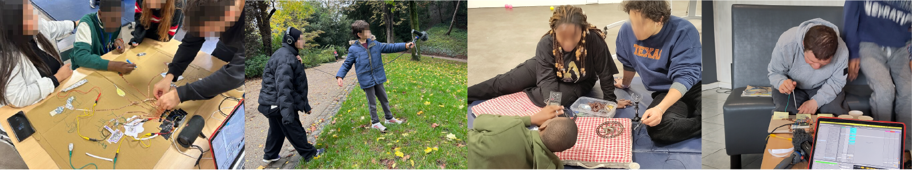

Designing Accessible Interfaces to Enhance Collective Musical Engagement for and with Children with Autism
This project investigates how Accessible Digital Musical Interfaces (ADMIs) can support collective musical engagement for and with autistic children. Based on an 18-month action research collaboration with two non-profit organizations, it examines how interfaces, workshops and facilitation practices can respond to the social and relational dynamics of group music-making.

Overview
Accessible Digital Musical Interfaces aim to make musical practice more inclusive by supporting people with diverse needs and abilities. Much of this work has focused on individual use, therapeutic contexts or educational settings. This project instead asks how ADMIs can support social interaction and collective musicking in community-based workshops with autistic children.
The work was conducted with two non-profit organizations in France, BrutPop and J'imaginerais, which facilitate creative and cultural activities for autistic children, teenagers and young adults. The project was developed with the children, facilitators, volunteers and researchers involved in these activities, rather than treating the interface as an isolated technical object.
Research questions
The project focuses on two questions. First, how can the interface design process remain responsive to the breadth of participation among autistic children? Second, how do forms of participation and engagement emerge and evolve over time within collective musicking activities?
These questions shift attention from the single child-interface interaction toward a broader ecology: sonic materials, workshop organization, communication modes, relationships between participants and the ways roles change during collective activity.
Method
We adopted an action research methodology, alternating between planning, workshop activity and collective reflection. Over a year and a half, we organized and observed a series of workshops with the partner organizations, iterating on the interfaces according to workshop observations, exchanges with facilitators and the forms of communication expressed by the children.
The study combines documentation of the design cycles with a thematic analysis of stakeholder interviews. This made it possible to study both the interfaces themselves and the social conditions that made participation, autonomy and collective engagement possible.
Design cycles
The first cycle explored tangible stations for recording and triggering sounds. Children could record sonic material with microphones and sensors, then replay and transform it through different effects. This created moments of shared attention and collective jamming, while also revealing the need for clearer affordances and less formal workshop arrangements.
The second cycle moved the activity outdoors through a sound walk and the creation of an interactive sound map. Children recorded sounds from the environment, drew visual traces and used conductive materials to trigger recordings. This approach worked for some participants, but the representational layer remained too abstract for others.
The third cycle introduced modular boxes that could independently record, loop, trigger and transform sounds. These boxes supported pair-based interaction between a child and a volunteer while still allowing several interfaces to be played together in collective improvisation.
Findings
The project identified design insights for collective musicking around three dimensions: sonic material, interaction and interface qualities. Recording strategies mattered because sounds became shared material for the group. Interaction needed to support both active and more passive forms of engagement, as well as multi-user scenarios. Interfaces also needed to remain low-cost, mobile and adaptable to changing workshop situations.
The interviews highlighted factors that supported children's autonomy: open objectives, multiple legitimate forms of participation, opportunities for reappropriation and flexible workshop structures. The work also showed the importance of designing responsively to relational dynamics, including dynamic role-taking, nonverbal communication and the negotiation of power asymmetries between researchers, facilitators, volunteers and children.